This is the outcome of the first question! This is where you will explain what happened because of the choice made in the first question. (Tap to continue)
(Tap to continue)
Ending Summary
Apple
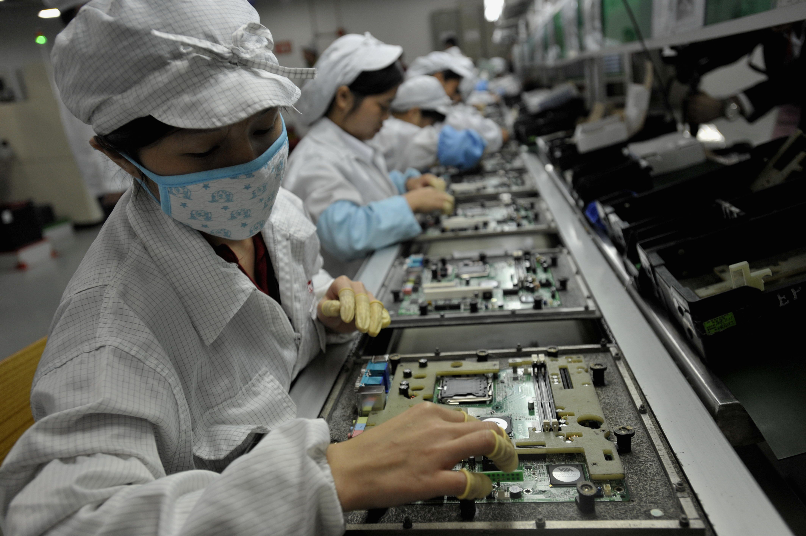
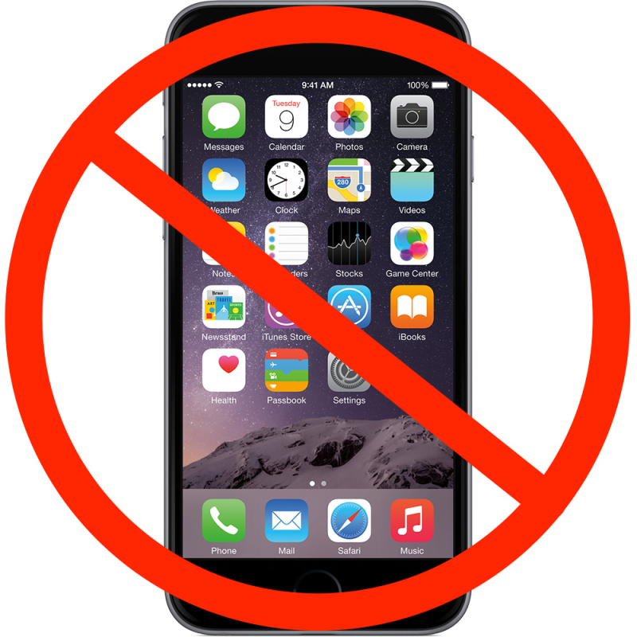
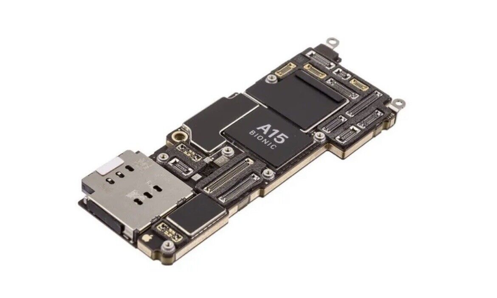
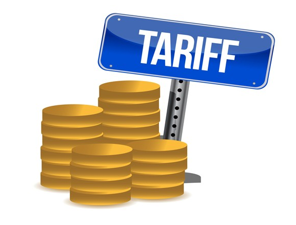
Choice 1
Choice 2
 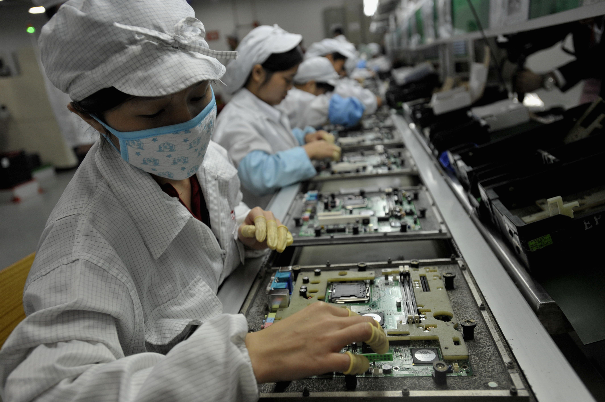
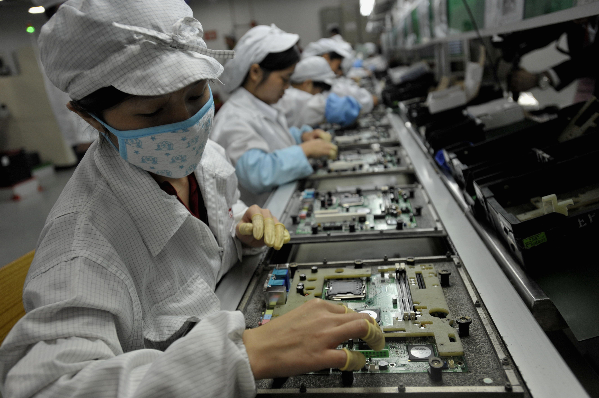
 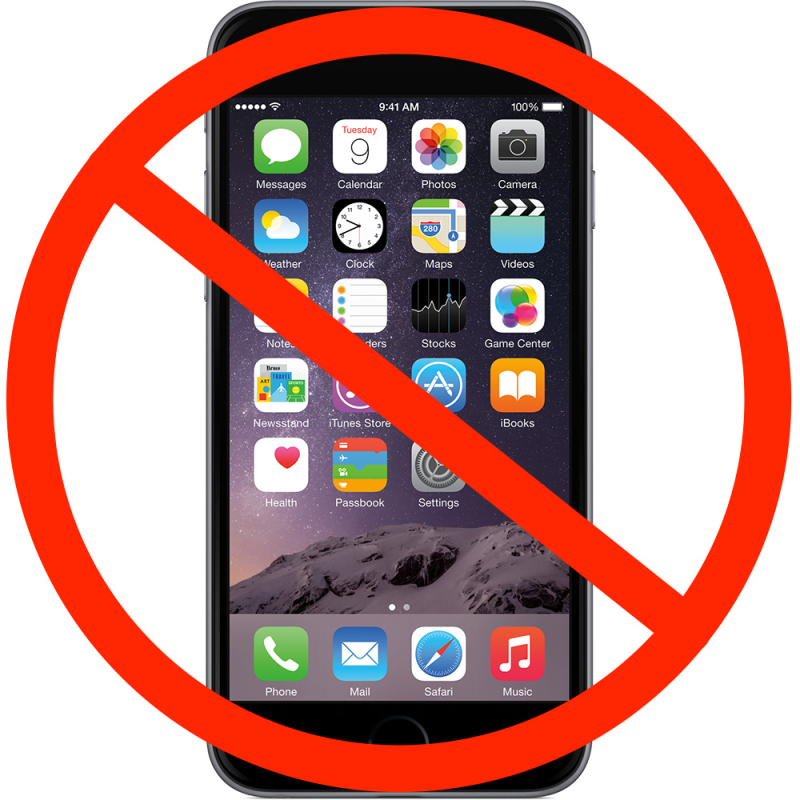
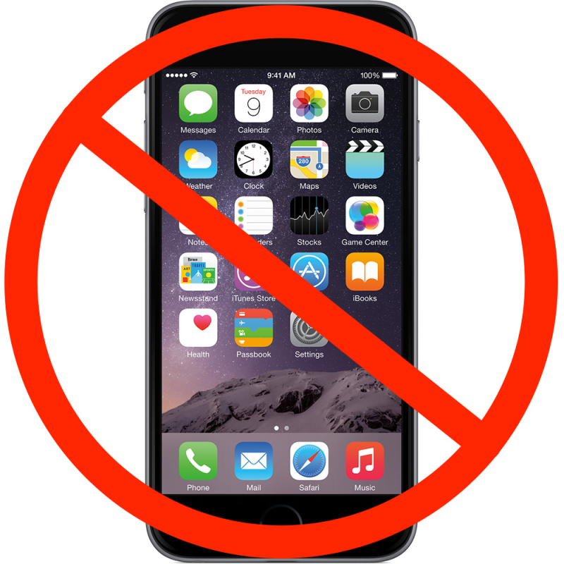
 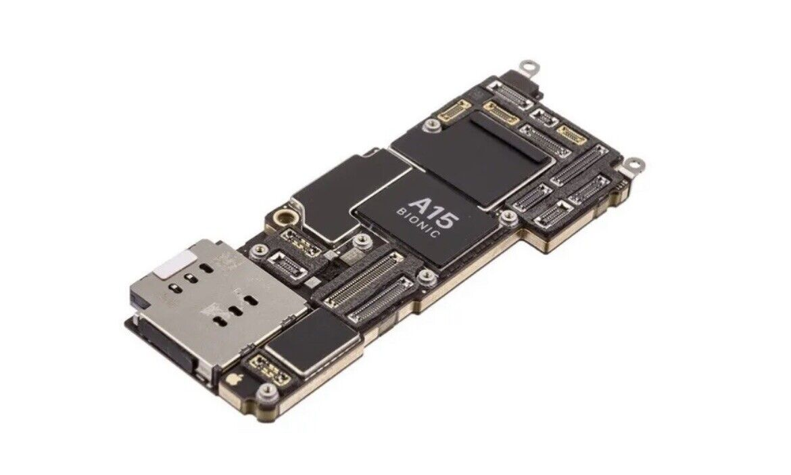
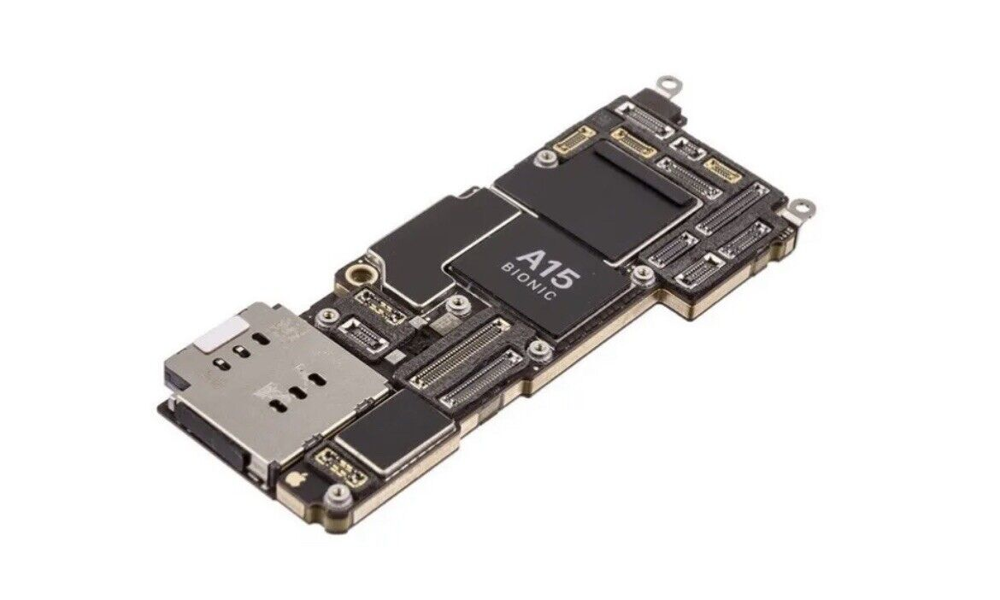
 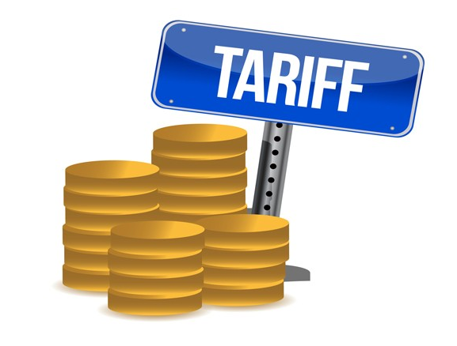
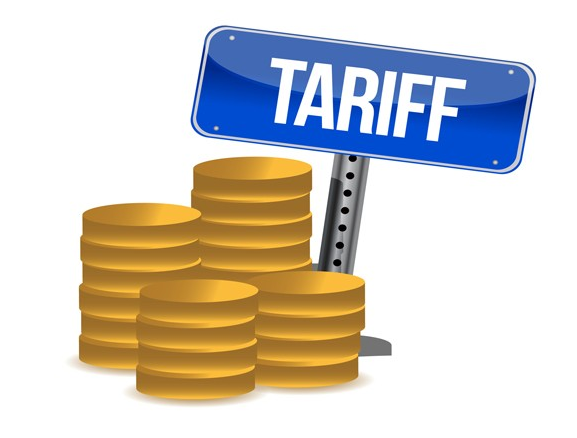